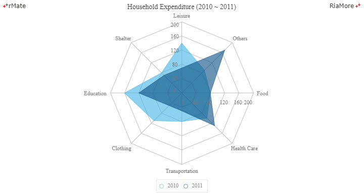
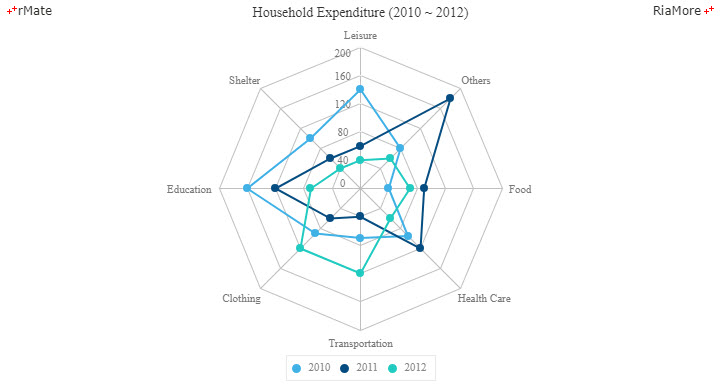
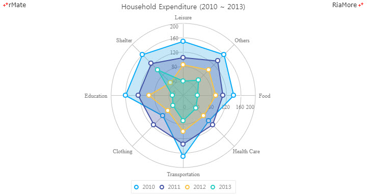

방사형 차트
방사형 차트는 파이 차트와 같은 폴라(Polar) 차트 계열과 닯았지만 다르게 작동합니다.
방사형 차트는 다중 변수 값을 2 차원 차트 상에 표시하는데, 표시되는 데이터 포인트들은 서로 연결되어 도형과 같은 모양을 갖게 됩니다.
다음은 8 가지 변수 값을 가지는 방사형 차트의 예제입니다.

See the CodePen 알메이트 차트 - 방사형 차트
방사형 차트는 <RadarChart> 노드의 series 속성값에 <RadarSeries> 노드를 설정하여 생성할 수 있습니다.
방사형 차트의 축은 두 가지가 있는데 하나는 데이터 값의 크기가 표시되는(데이터 포인트) 축으로써 <radialAxis> 속성에 정의하고,
다른 하나는 카테고리 명이 표시되는 축으로써 <angularAxis> 속성에 정의합니다.
<radialAxis> 속성에는 수치값을 표현하는 <LinearAxis> 노드를 정의합니다.
위 방사형 차트 샘플에서는 다음과 같이 두 개의 <Axis2DRenderer> 노드를 정의하여 차트의 중앙에서 테두리까지 가로(horizontal = “true”)와 세로(horizontal = “false”),
두 개의 <LinearAxis>를 표시하였습니다.
<radialAxis>
<LinearAxis id="rAxis"/>
</radialAxis>
<radialAxisRenderers>
<Axis2DRenderer axis="{rAxis}" horizontal="true" visible="true" tickPlacement="outside"/>
<Axis2DRenderer axis="{rAxis}" horizontal="false" visible="true" tickPlacement="outside"/>
</radialAxisRenderers>
<angularAxis> 속성에는 카테고리를 표현하는 <CategoryAxis> 노드를 정의합니다.
카테고리 명들은 방사형 차트의 바깥쪽 원호에 표시됩니다.
위 방사형 차트 샘플에서는 <AngularAxisRenderer> 노드를 정의하여 <CategoryAxis>를 표시하였습니다.
<angularAxis>
<CategoryAxis id="aAxis" categoryField="catName" displayName="Category"/>
</angularAxis>
<angularAxisRenderers>
<AngularAxisRenderer axis="{aAxis}"/>
</angularAxisRenderers>
축에 관한 자세한 설명은 축과 스케일을 참조하십시요.
방사형 차트에서 데이터는 적용되는 카테고리 수 만큼의 객체의 배열로 정의합니다.
위 방사형 차트 샘플에서는 다음과 같이 8 개의 카테고리에 해당하는 객체가 정의된 데이터가 적용되었습니다.
각 객체에는 2010 년 자료(year2010)와 2011 년 자료(year2011)가 정의되어 있습니다.
var chartData = [
{"catName" : "Food", "year2010" : 80, "year2011" : 80},
{"catName" : "Health Care", "year2010" : 100, "year2011" : 130},
{"catName" : "Transportation", "year2010" : 80, "year2011" : 50},
{"catName" : "Clothing", "year2010" : 110, "year2011" : 50},
{"catName" : "Education", "year2010" : 160, "year2011" : 120},
{"catName" : "Shelter", "year2010" : 80, "year2011" : 70},
{"catName" : "Leisure", "year2010" : 140, "year2011" : 70},
{"catName" : "Others", "year2010" : 90, "year2011" : 170}
];
폴리곤형 방사형 차트
폴리곤형 방사형 차트는 <RadarChart> 노드의 type 속성을 “polygon” 으로 지정하여 생성합니다.
방사형 차트의 데이터 포인트에 표시되는 마커의 크기는 <RadarSeries> 노드의 radius 속성에 마커의 반지름 크기로 설정할 수 있으며 마커의 테두리 선은 <lineStroke> 속성에, 마커에 채워지는 색은 <fill> 속성에 정의합니다.
다음은 이에 대한 코드와 이를 적용해서 출력한 차트의 예제입니다.
<RadarChart type="polygon" paddingTop="25" paddingBottom="25" showDataTips="true">
...
<series>
<RadarSeries field="year2010" radius="4" displayName="2010" fillLineArea="false">
<fill>
<SolidColor color="#40b1e6"/>
</fill>
<lineStroke>
<Stroke color="#40b1e6" weight="2"/>
</lineStroke>
...
</RadarSeries>
<RadarSeries field="year2011" radius="4" displayName="2011" fillLineArea="false">
...
</RadarSeries>
<RadarSeries field="year2012" radius="4" displayName="2012" fillLineArea="false">
...
</RadarSeries>
</series>
</RadarChart>

See the CodePen 알메이트 차트 - 폴리곤형 방사형 차트
원형 방사형 차트
원형 방사형 차트는 <RadarChart> 노드의 type 속성을 circle 으로 지정하여 생성합니다.
방사형 차트의 각 데이터 시리즈가 표현하는 도형(데이터 포인트들을 연결하면 생기는 도형)의 내부에 색을 칠할 수 있습니다.
도형 내부의 색은 <areaFill> 속성을 이용하여 설정할 수 있습니다. 다음은 이에 대한 코드와 이를 적용해서 출력한 차트의 예제입니다.
<RadarChart type="circle" paddingTop="25" paddingBottom="25" showDataTips="true">
...
<series>
<RadarSeries field="year2010" displayName="2010">
...
<areaFill>
<SolidColor color="#4352a5" alpha="0.3"/>
</areaFill>
</RadarSeries>
<RadarSeries field="year2012" displayName="2012">
...
</RadarSeries>
<RadarSeries field="year2013" displayName="2013">
...
</RadarSeries>
</series>
</RadarChart>

See the CodePen 알메이트 차트 - 원형 방사형 차트